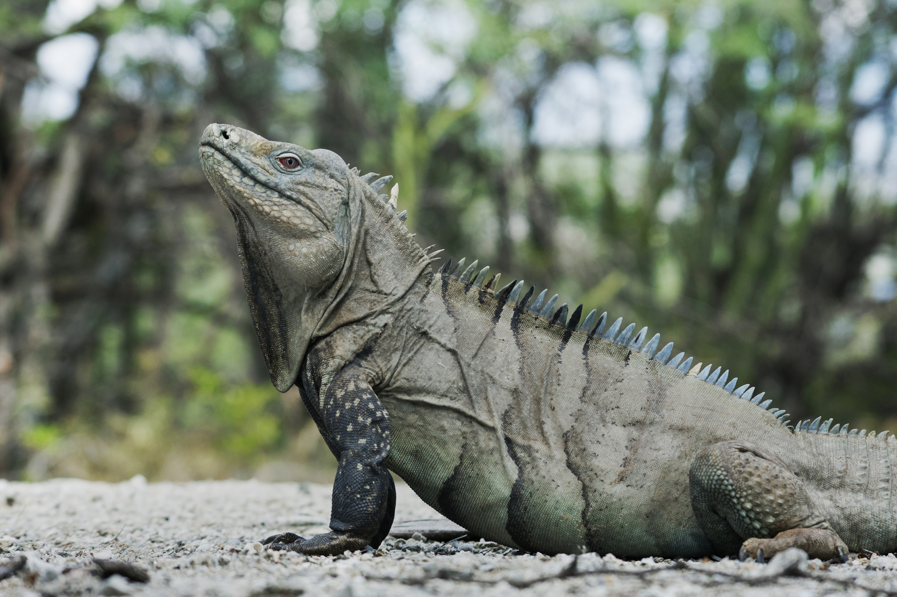
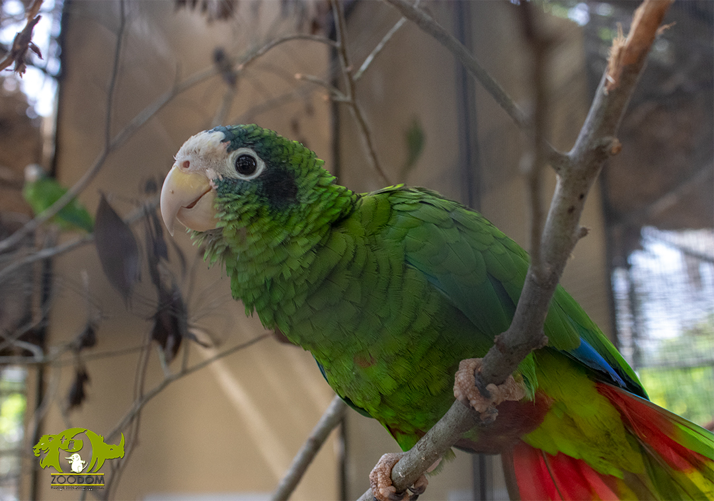
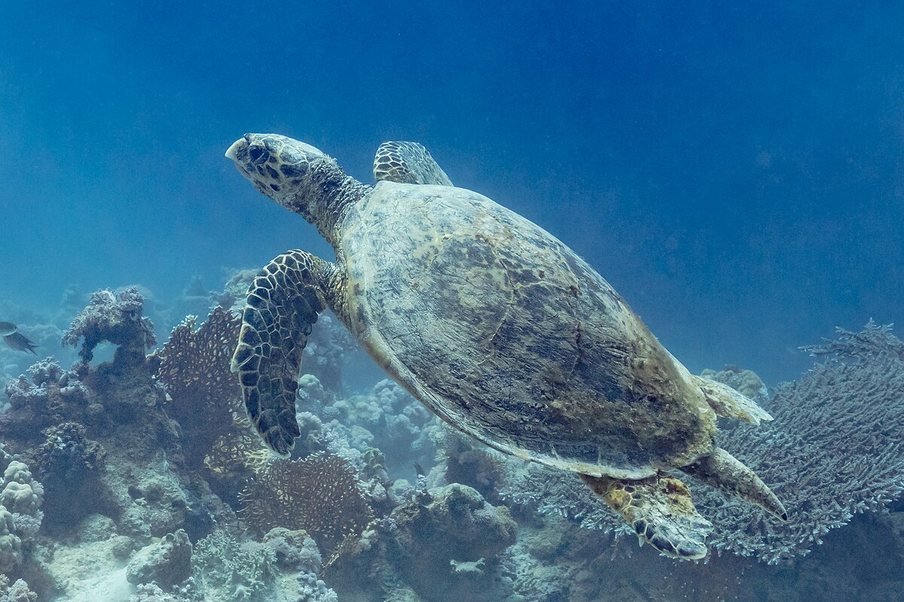
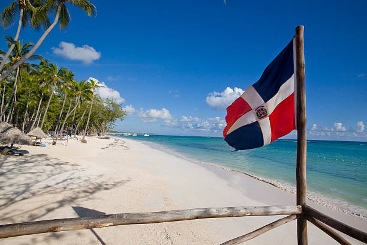

La Caza Indiscriminada en República Dominicana: Una Amenaza a Nuestra Biodiversidad
La República Dominicana, un país reconocido por su exuberante belleza natural y rica biodiversidad, enfrenta una creciente amenaza: la caza indiscriminada. Esta práctica, impulsada por diversos factores, está poniendo en peligro la supervivencia de numerosas especies y desequilibrando los delicados ecosistemas que sustentan la vida en la isla.
En esta página web, exploraremos en profundidad las causas y consecuencias de la caza indiscriminada en nuestro país,
así como los esfuerzos que se están llevando a cabo para combatir este problema.
Analizaremos las especies más afectadas, los impactos en el medio ambiente y la economía,
y las posibles soluciones para proteger nuestra invaluable herencia natural.
Indiscriminate Hunting in the Dominican Republic: A Threat to Our Biodiversity
The Dominican Republic, a country recognized for its lush natural beauty and rich biodiversity, faces a growing threat: indiscriminate hunting. This practice, driven by various factors, endangers the survival of numerous species and disrupts the delicate ecosystems that sustain life on the island.
On this website, we will explore in depth the causes and consequences of indiscriminate hunting in our country,
as well as the efforts being made to combat this problem.
We will analyze the most affected species, the impacts on the environment and the economy,
and possible solutions to protect our invaluable natural heritage.
Causas y Consecuencias de la Caza Indiscriminada en República Dominicana
La caza indiscriminada en República Dominicana es un problema complejo con múltiples causas interrelacionadas:
- Pobreza y necesidad de subsistencia: En comunidades rurales, la caza puede ser una fuente de alimento y sustento económico para familias de bajos recursos.
- Falta de conciencia y educación ambiental: La falta de conocimiento sobre la importancia de la biodiversidad y las consecuencias de la caza indiscriminada contribuye a esta práctica.
- Debilidad en la aplicación de la ley: La falta de recursos y personal para hacer cumplir las leyes ambientales permite que la caza ilegal continúe sin mayores consecuencias.
- Tradiciones culturales y prácticas arraigadas: En algunas comunidades, la caza ha sido una práctica tradicional transmitida de generación en generación, lo que dificulta su erradicación.
- Comercio ilegal de especies: La demanda de ciertas especies para el consumo, mascotas o fines medicinales impulsa la caza ilegal y el tráfico de vida silvestre.
- Destrucción del hábitat: La deforestación, la expansión agrícola y el desarrollo urbano reducen el hábitat natural de muchas especies, lo que las hace más vulnerables a la caza.
Consecuencias de la caza indiscriminada:
- Pérdida de biodiversidad: La caza excesiva puede llevar a la disminución de poblaciones e incluso a la extinción de especies, afectando la riqueza natural del país.
- Desequilibrio ecológico: La eliminación de ciertas especies puede alterar las cadenas alimenticias y los procesos naturales, causando desequilibrios en los ecosistemas.
- Impacto económico: La pérdida de biodiversidad puede afectar el turismo, la pesca y otras actividades económicas que dependen de los recursos naturales.
- Riesgo para la salud humana: La caza y el consumo de animales silvestres pueden aumentar el riesgo de transmisión de enfermedades zoonóticas.
- Pérdida de patrimonio cultural: La desaparición de especies emblemáticas puede significar la pérdida de parte de la identidad cultural y el patrimonio natural del país.
- Daño a los ecosistemas: La caza indiscriminada puede causar daños indirectos a los ecosistemas, como la alteración de la vegetación y la contaminación del suelo y el agua.
Causes and Consequences of Indiscriminate Hunting in the Dominican Republic
Indiscriminate hunting in the Dominican Republic is a complex problem with multiple interrelated causes:
- Poverty and the need for subsistence: In rural communities, hunting can be a source of food and economic support for low-income families.
- Lack of environmental awareness and education: The lack of knowledge about the importance of biodiversity and the consequences of indiscriminate hunting contributes to this practice.
- Weak enforcement of the law: The lack of resources and personnel to enforce environmental laws allows illegal hunting to continue without major consequences.
- Cultural traditions and ingrained practices: In some communities, hunting has been a traditional practice passed down from generation to generation, making it difficult to eradicate.
- Illegal wildlife trade: The demand for certain species for consumption, pets, or medicinal purposes drives illegal hunting and wildlife trafficking.
- Habitat destruction: Deforestation, agricultural expansion, and urban development reduce the natural habitat of many species, making them more vulnerable to hunting.
Consequences of indiscriminate hunting:
- Loss of biodiversity: Excessive hunting can lead to population declines and even species extinction, affecting the country's natural wealth.
- Ecological imbalance: The removal of certain species can disrupt food chains and natural processes, causing imbalances in ecosystems.
- Economic impact: The loss of biodiversity can affect tourism, fishing, and other economic activities that depend on natural resources.
- Risk to human health: Hunting and consuming wildlife can increase the risk of zoonotic disease transmission.
- Loss of cultural heritage: The disappearance of emblematic species can mean the loss of part of the country's cultural identity and natural heritage.
- Damage to ecosystems: Indiscriminate hunting can cause indirect damage to ecosystems, such as vegetation alteration and soil and water contamination.
Plan de Acción y Propuestas para Combatir la Caza Indiscriminada en República Dominicana
Para abordar de manera efectiva la caza indiscriminada en República Dominicana,
se requiere un plan de acción integral que involucre a diversos actores y se enfoque en múltiples estrategias:
-
Fortalecimiento de la legislación y aplicación de la ley: Es fundamental revisar y actualizar las leyes existentes para garantizar que sean efectivas en la protección de la fauna silvestre. Además, se debe aumentar la vigilancia y el control en áreas protegidas para prevenir la caza ilegal.
-
Educación y sensibilización: Implementar programas de educación ambiental en escuelas y comunidades para crear conciencia sobre la importancia de la biodiversidad y las consecuencias de la caza indiscriminada. Involucrar a líderes comunitarios y organizaciones locales en campañas de sensibilización.
-
Desarrollo de alternativas económicas sostenibles: Fomentar el ecoturismo y la conservación de la fauna como fuentes de ingresos para las comunidades locales. Proporcionar capacitación y recursos para que las comunidades puedan participar en actividades económicas sostenibles que no dependan de la caza.
-
Investigación y monitoreo: Realizar estudios sobre las poblaciones de especies en peligro y su hábitat para comprender mejor el impacto de la caza indiscriminada. Establecer programas de monitoreo para evaluar la efectividad de las medidas implementadas.
-
Colaboración internacional: Trabajar en conjunto con organizaciones internacionales y otros países para combatir el tráfico ilegal de especies y compartir buenas prácticas en la conservación de la biodiversidad.
Action Plan and Proposals to Combat Indiscriminate Hunting in the Dominican Republic
To effectively address indiscriminate hunting in the Dominican Republic,
a comprehensive action plan is required that involves various stakeholders and focuses on multiple strategies:
-
Strengthening legislation and law enforcement: It is essential to review and update existing laws to ensure they are effective in protecting wildlife. Additionally, surveillance and control in protected areas must be increased to prevent illegal hunting.
-
Education and awareness: Implement environmental education programs in schools and communities to raise awareness about the importance of biodiversity and the consequences of indiscriminate hunting. Engage community leaders and local organizations in awareness campaigns.
-
Development of sustainable economic alternatives: Promote ecotourism and wildlife conservation as sources of income for local communities. Provide training and resources for communities to participate in sustainable economic activities that do not depend on hunting.
-
Research and monitoring: Conduct studies on endangered species populations and their habitats to better understand the impact of indiscriminate hunting. Establish monitoring programs to evaluate the effectiveness of implemented measures.
-
International collaboration: Work together with international organizations and other countries to combat illegal wildlife trafficking and share best practices in biodiversity conservation.
Especies en peligro

Iguana de Ricord
Amenazada por la pérdida de hábitat y la caza indiscriminada.
La Iguana de Ricord es una especie endémica que enfrenta serias amenazas debido a la pérdida de su hábitat y la caza indiscriminada.
Esta iguana es crucial para el equilibrio de los ecosistemas terrestres y su conservación es vital para preservar la biodiversidad del país.
La protección de esta especie es esencial para mantener el equilibrio ecológico en la República Dominicana.

Cotorra de la Española
En peligro crítico por la pérdida de hábitat y la caza indiscriminada.
La Cotorra de la Española está en peligro principalmente por la captura ilegal para el comercio de mascotas,
donde los pichones son extraídos de sus nidos, a menudo con consecuencias fatales para los padres y el nido.
A esto se suma la destrucción y fragmentación de su hábitat debido a la deforestación para diversas actividades humanas.

Tortuga Carey
En peligro crítico por la pesca ilegal y la destrucción de nidos.
La Tortuga Carey es una especie marina que enfrenta serias amenazas debido a la pesca ilegal y la destrucción de sus nidos.
Esta tortuga es crucial para el equilibrio de los ecosistemas marinos y su conservación es vital para preservar la biodiversidad del país.
La protección de esta especie es esencial para mantener el equilibrio ecológico en la República Dominicana.
Endangered Species
Ricord's Iguana
Threatened by habitat loss and indiscriminate hunting.
Ricord's Iguana is an endemic species facing serious threats due to habitat loss and indiscriminate hunting.
This iguana is crucial for the balance of terrestrial ecosystems, and its conservation is vital to preserving the country's biodiversity.
Protecting this species is essential to maintaining ecological balance in the Dominican Republic.
Hispaniolan Parrot
Critically endangered due to habitat loss and indiscriminate hunting.
The Hispaniolan Parrot is primarily endangered by illegal capture for the pet trade,
where chicks are taken from their nests, often with fatal consequences for the parents and the nest.
This is compounded by the destruction and fragmentation of its habitat due to deforestation for various human activities.
Hawksbill Turtle
Critically endangered due to illegal fishing and nest destruction.
The Hawksbill Turtle is a marine species facing serious threats due to illegal fishing and the destruction of its nests.
This turtle is crucial for the balance of marine ecosystems, and its conservation is vital to preserving the country's biodiversity.
Protecting this species is essential to maintaining ecological balance in the Dominican Republic.
Información sobre la Ley 64-00
La Ley 64-00, promulgada el 18 de agosto de 2000, establece el marco legal para la protección del medio ambiente y los recursos naturales en la República Dominicana.
Esta ley tiene como objetivo principal garantizar la conservación y el uso sostenible de los recursos naturales, así como la protección de la biodiversidad y los ecosistemas del país.
Artículo 175.- Se sancionará con prisión correccional de seis (6) meses a dos (2) años y multa de quinientos (500) a mil (1,000) salarios mínimos, o ambas penas a la vez, a quien:
Introduzca al territorio nacional especies exóticas sin la debida autorización de la Secretaría de Estado de Medio Ambiente y Recursos Naturales.
Cace, capture, destruya o comercialice especies protegidas o en peligro de extinción, o sus productos o subproductos, sin la debida autorización.
Realice actividades que deterioren o destruyan los hábitats de especies protegidas o en peligro de extinción.
Realice actividades que afecten negativamente la diversidad biológica del país.
En el contexto de la caza indiscriminada, el numeral 2 del Artículo 175 es el más relevante.
Este artículo penaliza la caza, captura, destrucción o comercialización de especies que han sido oficialmente clasificadas
como protegidas o en peligro de extinción, así como sus productos o subproductos, sin contar con el permiso correspondiente emitido
por la autoridad competente (la Secretaría de Estado de Medio Ambiente y Recursos Naturales, hoy Ministerio de Medio Ambiente y Recursos Naturales).
Infórmate
Information about Law 64-00
Law 64-00, enacted on August 18, 2000, establishes the legal framework for the protection of the environment and natural resources in the Dominican Republic.
This law's primary objective is to ensure the conservation and sustainable use of natural resources, as well as the protection of the country's biodiversity and ecosystems.
Article 175.- It will be punished with corrective imprisonment from six (6) months to two (2) years and a fine of five hundred (500) to one thousand (1,000) minimum wages, or both penalties at the same time, to whoever:
Introduces exotic species into the national territory without the proper authorization of the Ministry of Environment and Natural Resources.
Hunts, captures, destroys, or markets protected or endangered species, or their products or by-products, without proper authorization.
Carries out activities that deteriorate or destroy the habitats of protected or endangered species.
Carries out activities that negatively affect the country's biological diversity.
In the context of indiscriminate hunting, numeral 2 of Article 175 is the most relevant.
This article penalizes the hunting, capture, destruction, or commercialization of species that have been officially classified
as protected or endangered, as well as their products or by-products, without the corresponding permit issued
by the competent authority (the Ministry of Environment and Natural Resources).
Learn More
Opinión Personal

Mi perspectiva
En la República Dominicana representa una profunda preocupación y una seria amenaza para el invaluable patrimonio natural del país. Observo cómo esta práctica, impulsada por una compleja red de factores que incluyen la pobreza, la falta de educación y la debilidad en la aplicación de la ley, está erosionando la rica biodiversidad que caracteriza a la isla. La pérdida de cada especie, especialmente aquellas endémicas o en peligro de extinción, no solo empobrece el ecosistema, sino que también puede tener consecuencias negativas a largo plazo para el turismo y la economía local, que dependen en gran medida de la belleza natural del país.
¿Cómo abordar el problema?
Considero que abordar este problema requiere un enfoque integral y urgente. No basta con la existencia de leyes; es crucial fortalecer su aplicación, invertir en educación ambiental para crear conciencia sobre la importancia de la conservación y ofrecer alternativas económicas sostenibles a las comunidades que dependen de la caza para su subsistencia. La colaboración entre el gobierno, las organizaciones no gubernamentales, las comunidades locales y la cooperación internacional es fundamental para implementar estrategias efectivas que protejan la fauna dominicana y aseguren un futuro donde la coexistencia entre el ser humano y la naturaleza sea posible y armoniosa
Limitantes
Las principales limitantes para abordar la caza indiscriminada en República Dominicana incluyen la dificultad para aplicar las leyes debido a la falta de recursos y personal, la pobreza y falta de alternativas económicas que impulsan la caza como sustento, la falta generalizada de conciencia y educación ambiental sobre la importancia de la biodiversidad, y las tradiciones culturales arraigadas en algunas comunidades que perpetúan esta práctica. Superar estos obstáculos requiere un enfoque integral que combine la aplicación de la ley con el desarrollo socioeconómico y la educación./p>
Personal Opinion
My Perspective
In the Dominican Republic, indiscriminate hunting represents a deep concern and a serious threat to the country's invaluable natural heritage. I observe how this practice, driven by a complex network of factors including poverty, lack of education, and weak law enforcement, is eroding the rich biodiversity that characterizes the island. The loss of each species, especially those endemic or endangered, not only impoverishes the ecosystem but can also have long-term negative consequences for tourism and the local economy, which heavily depend on the country's natural beauty.
How to Address the Problem?
I believe that addressing this problem requires an integral and urgent approach. The existence of laws is not enough; it is crucial to strengthen their enforcement, invest in environmental education to raise awareness about the importance of conservation, and offer sustainable economic alternatives to communities that depend on hunting for their livelihood. Collaboration between the government, non-governmental organizations, local communities, and international cooperation is essential to implement effective strategies that protect Dominican wildlife and ensure a future where coexistence between humans and nature is possible and harmonious.
Limitations
The main limitations to addressing indiscriminate hunting in the Dominican Republic include the difficulty of enforcing laws due to a lack of resources and personnel, poverty and the lack of economic alternatives that drive hunting as a means of sustenance, widespread lack of awareness and environmental education about the importance of biodiversity, and cultural traditions ingrained in some communities that perpetuate this practice. Overcoming these obstacles requires an integral approach that combines law enforcement with socioeconomic development and education.